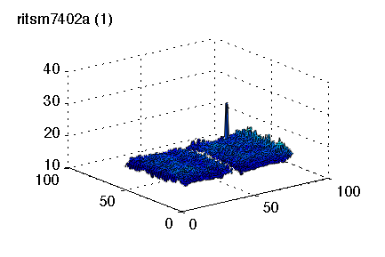
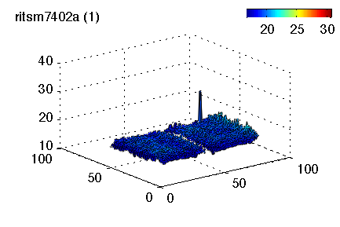
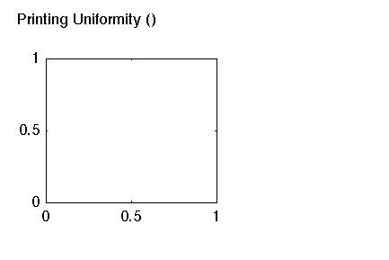
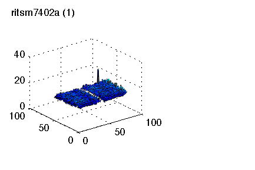
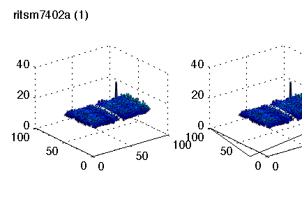
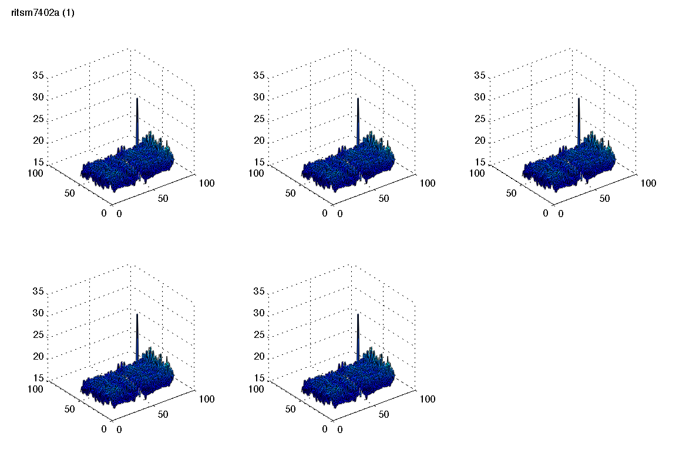

clc; try dbquit all, end;close all; cleardebug;
pi = 1;
clear pInfo;
disp('Cleared Debug Workspace.');
newProfile = @(varargin) evalin('caller', 'profile on; tId=tic;,' );
endProfile = @(varargin) evalin('caller', ['toc(tId); profile off; ' ...
'pInfo(pi) = profile(''info''); ' 'pi = pi+1; ' ] );
rId = tic;
disp('Running Tests...');
newProfile();
x = PlotFigureObject('WindowStyle', 'docked');
endProfile(); snapnow(); newProfile();
s = UniformitySurfaceObject.Create(x.PlotAxes);
endProfile(); snapnow(); newProfile();
x.setVisible(true);
endProfile(); newProfile();
p = x.PlotAxes;
endProfile(); newProfile();
s = UniformitySurfaceObject.Create(x.PlotAxes);
endProfile(); snapnow(); newProfile();
d = s.DataSource; b = ColorBarObject.Create(p);
endProfile(); newProfile();
for i = 1:d.Samples
s.setSheet('+1');
drawnow();
end
endProfile(); snapnow(); newProfile();
delete(x);
endProfile(); newProfile();
x = MultiPlotFigureObject('WindowStyle', 'docked'); x.setVisible(1);
endProfile(); snapnow(); newProfile();
s(1) = UniformitySurfaceObject.Create(x.getPlotAxes(1));
endProfile(); snapnow(); newProfile();
for i = 2:5, s(i) = UniformitySurfaceObject.Create(x.getPlotAxes(i), 'DataSource', s(1).DataSource); end
endProfile(); snapnow(); newProfile();
x.WindowStyle = 'normal';
set(x.Handle, 'Position', [1 61 1168 796]);
drawnow;
endProfile();
pause(2);
set(x.Handle, 'Position', [1 61 1168 796]);
pause(2);
snapnow();
newProfile();
for i = 1:d.Samples
s(1).setSheet('+1');
drawnow();
end
endProfile(); snapnow(); newProfile();
delete(x);
endProfile(); close all;
drawnow();
fprintf('Tests Complete in %f s.\n', toc(rId));
Cleared Debug Workspace.
Running Tests...
*** CreateHandleObject: figure ==> Name, Printing, Uniformity, Plot, Renderer, opengl, ToolBar, none, MenuBar, none, WindowStyle, docked, Color, white, Tag, PlotFigureObject_1, HandleVisibility, on, SelectionHighlight, on, HitTest, on, Visible, on, Selected, off, UserData, [1x1, PlotFigureObject], Visible, off, Parent, [0], Tag, PlotFigureObject_1
*** CreateHandleObject: axes ==> Box, off, Color, none, Tag, OverlayAxesObject_1, HandleVisibility, on, SelectionHighlight, on, HitTest, off, Visible, off, Selected, off, UserData, [1x1, OverlayAxesObject], Parent, [1], Tag, OverlayAxesObject_1
*** CreateHandleObject: text ==> String, Title, Tag, TitleTextObject_1, HandleVisibility, on, SelectionHighlight, on, HitTest, off, Visible, on, Selected, off, UserData, [1x1, TitleTextObject], Parent, [0.0426025390625], Tag, TitleTextObject_1
*** CreateHandleObject: axes ==> Box, on, Color, none, Tag, PlotAxesObject_1, HandleVisibility, on, SelectionHighlight, on, HitTest, on, Visible, on, Selected, off, UserData, [1x1, PlotAxesObject], Parent, [1], Tag, PlotAxesObject_1
Elapsed time is 1.507706 seconds.
*** CreateHandleObject: surf ==> LineSmoothing, on, Tag, UniformitySurfaceObject_1, HandleVisibility, on, SelectionHighlight, on, HitTest, on, Visible, on, Selected, off, UserData, [1x1, UniformitySurfaceObject], Parent, [6.0426025390625], Tag, UniformitySurfaceObject_1
Elapsed time is 2.366816 seconds.
Elapsed time is 2.809895 seconds.
Elapsed time is 0.000224 seconds.
*** CreateHandleObject: surf ==> LineSmoothing, on, Tag, UniformitySurfaceObject_2, HandleVisibility, on, SelectionHighlight, on, HitTest, on, Visible, on, Selected, off, UserData, [1x1, UniformitySurfaceObject], Parent, [6.0426025390625], Tag, UniformitySurfaceObject_2
Elapsed time is 1.597544 seconds.

Elapsed time is 0.702512 seconds.
Stacks: 501 Loops: 0 Duration: 0.045 s
Elapsed time is 12.314676 seconds.

Elapsed time is 0.070463 seconds.
*** CreateHandleObject: figure ==> Name, Printing, Uniformity, Plot, Renderer, opengl, ToolBar, none, MenuBar, none, WindowStyle, docked, Color, white, Tag, MultiPlotFigureObject_1, HandleVisibility, on, SelectionHighlight, on, HitTest, on, Visible, on, Selected, off, UserData, [1x1, MultiPlotFigureObject], Visible, off, Parent, [0], Tag, MultiPlotFigureObject_1
*** CreateHandleObject: axes ==> Box, off, Color, none, Tag, OverlayAxesObject_2, HandleVisibility, on, SelectionHighlight, on, HitTest, off, Visible, off, Selected, off, UserData, [1x1, OverlayAxesObject], Parent, [1], Tag, OverlayAxesObject_2
*** CreateHandleObject: text ==> String, Title, Tag, TitleTextObject_2, HandleVisibility, on, SelectionHighlight, on, HitTest, off, Visible, on, Selected, off, UserData, [1x1, TitleTextObject], Parent, [0.0498046875], Tag, TitleTextObject_2
*** CreateHandleObject: axes ==> Box, on, Color, none, Tag, PlotAxesObject_2, HandleVisibility, on, SelectionHighlight, on, HitTest, on, Visible, on, Selected, off, UserData, [1x1, PlotAxesObject], Parent, [1], Tag, PlotAxesObject_2
Elapsed time is 1.472136 seconds.

*** CreateHandleObject: surf ==> LineSmoothing, on, Tag, UniformitySurfaceObject_3, HandleVisibility, on, SelectionHighlight, on, HitTest, on, Visible, on, Selected, off, UserData, [1x1, UniformitySurfaceObject], Parent, [6.0498046875], Tag, UniformitySurfaceObject_3
Elapsed time is 1.680406 seconds.

*** CreateHandleObject: axes ==> Box, on, Color, none, Tag, PlotAxesObject_3, HandleVisibility, on, SelectionHighlight, on, HitTest, on, Visible, on, Selected, off, UserData, [1x1, PlotAxesObject], Parent, [1], Tag, PlotAxesObject_3
*** CreateHandleObject: surf ==> LineSmoothing, on, Tag, UniformitySurfaceObject_4, HandleVisibility, on, SelectionHighlight, on, HitTest, on, Visible, on, Selected, off, UserData, [1x1, UniformitySurfaceObject], Parent, [12.0498046875], Tag, UniformitySurfaceObject_4
*** CreateHandleObject: axes ==> Box, on, Color, none, Tag, PlotAxesObject_4, HandleVisibility, on, SelectionHighlight, on, HitTest, on, Visible, on, Selected, off, UserData, [1x1, PlotAxesObject], Parent, [1], Tag, PlotAxesObject_4
*** CreateHandleObject: surf ==> LineSmoothing, on, Tag, UniformitySurfaceObject_5, HandleVisibility, on, SelectionHighlight, on, HitTest, on, Visible, on, Selected, off, UserData, [1x1, UniformitySurfaceObject], Parent, [18.0498046875], Tag, UniformitySurfaceObject_5
*** CreateHandleObject: axes ==> Box, on, Color, none, Tag, PlotAxesObject_5, HandleVisibility, on, SelectionHighlight, on, HitTest, on, Visible, on, Selected, off, UserData, [1x1, PlotAxesObject], Parent, [1], Tag, PlotAxesObject_5
*** CreateHandleObject: surf ==> LineSmoothing, on, Tag, UniformitySurfaceObject_6, HandleVisibility, on, SelectionHighlight, on, HitTest, on, Visible, on, Selected, off, UserData, [1x1, UniformitySurfaceObject], Parent, [24.0498046875], Tag, UniformitySurfaceObject_6
*** CreateHandleObject: axes ==> Box, on, Color, none, Tag, PlotAxesObject_6, HandleVisibility, on, SelectionHighlight, on, HitTest, on, Visible, on, Selected, off, UserData, [1x1, PlotAxesObject], Parent, [1], Tag, PlotAxesObject_6
*** CreateHandleObject: surf ==> LineSmoothing, on, Tag, UniformitySurfaceObject_7, HandleVisibility, on, SelectionHighlight, on, HitTest, on, Visible, on, Selected, off, UserData, [1x1, UniformitySurfaceObject], Parent, [30.0498046875], Tag, UniformitySurfaceObject_7
Elapsed time is 2.973051 seconds.

Elapsed time is 0.301193 seconds.

Stacks: 501 Loops: 0 Duration: 0.016 s
Elapsed time is 15.006276 seconds.
Elapsed time is 0.099931 seconds.
Tests Complete in 52.640074 s.